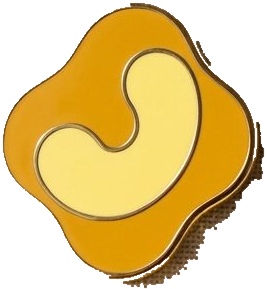
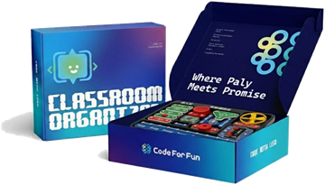
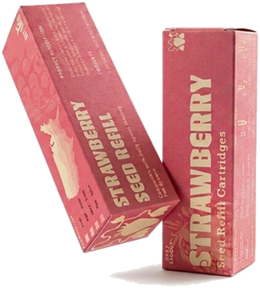
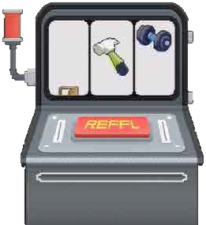

_WHERE IT STARTED
My shelves have always been full of toys. They have never been just toys to me. They are my friends, and every time I look at them, they give me a special, happy energy. That energy led me to graphic design, and then to games.
WARNING: I RUN ON TOY ENERGY
ZIHE WANG
_WHAT I WANT FROM DESIGN
A good toy does not need a manual to make someone smile.

It speaks without a word. That is what I want from design. I like to make overwhelming things feel less overwhelming, and let them feel like play.
_WHERE IT STARTED
My shelves have always been full of toys. They have never been just toys to me. They are my friends, and every time I look at them, they give me a special, happy energy. That energy led me to graphic design, and then to games.

_HOW I MAKE
When I could not find the part I wanted, I designed it myself and built it with a 3D printer. When I start a project, I always think about how to turn it into something real, and I keep watching new design technology to find better ways to do it.

_HOW I LEAD
For my graduation project, I built a game and led a small team for the first time: two programmers, and I made all the art. I gave everyone the same tasks and the same time, but everyone has different skills, so it did not work well. Now I try to see what each person is good at, and I lead with more encouragement.
My toys give me happy energy, and I want my work to give people the same energy.
I hope everything I design earns a place on someone’s shelf.
GET IN TOUCH · ebadudu1234@gmail.com